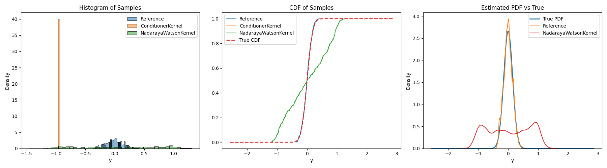

Note
Go to the end to download the full example code.
5.8. Conditional Sampling
Example of using the codpy.conditioning module to sample from a conditional heteroscedastic distribution.
import matplotlib.pyplot as plt
import numpy as np
import pandas as pd
import seaborn as sns
from scipy.stats import norm
from codpy import conditioning
def mean_function(x):
return np.sin(np.pi * x)
def variance_function(x):
return 0.1 + 0.05 * np.cos(np.pi * x * 0.5) # l'interval ~ [0.05, 0.15]
def generate_conditional_hetero_skedastic_density_data(
N_train=1000, seed=None, mean_f=None, variance_f=None
):
if seed is not None:
np.random.seed(seed)
if mean_f is None:
mean_f = mean_function
if variance_f is None:
variance_f = variance_function
x = np.random.uniform(-1.0, 1.0, N_train)
mean_y = mean_f(x)
std_y = variance_f(x)
y = np.random.normal(loc=mean_y, scale=std_y)
z = 0.0 # conditioning point
fz_mean = mean_f(z)
fz_std = variance_f(z)
y_pdf = np.linspace(2.0 * y.min(), 2.0 * y.max(), 1000)
density = norm.pdf(y_pdf, loc=fz_mean, scale=fz_std)
density /= np.trapz(density, y_pdf) # Normalize
return x, y, z, y_pdf, (fz_mean, fz_std), density
def load_synthetic_data(N=1000, cond_point_val=0.0, seed=42):
x_raw, y_raw, z, y_pdf, (fz_mean, fz_std), true_density = (
generate_conditional_hetero_skedastic_density_data(
N_train=N,
seed=seed,
mean_f=mean_function,
variance_f=variance_function,
)
)
x = pd.DataFrame(x_raw, columns=["x"])
y = pd.DataFrame(y_raw, columns=["y"])
cond_point = pd.DataFrame([[cond_point_val]], columns=["x"])
# true samples for reference
ref_samples = np.random.normal(loc=fz_mean, scale=fz_std, size=500)
ref_dist = pd.DataFrame(ref_samples, columns=["y"])
ref_dist["Type"] = "Reference"
return x, y, ref_dist, cond_point, y_pdf, true_density, fz_mean, fz_std
def sample_and_plot_synthetic(samplers, N=500, seed=3):
x, y, ref_dist, cond_point, y_pdf, true_density, fz_mean, fz_std = (
load_synthetic_data(seed=seed)
)
results = [ref_dist]
for SamplerClass in samplers:
model = SamplerClass(x=x, y=y)
sampled = model.sample(x=cond_point, n=N)[0]
df_sampled = pd.DataFrame(sampled, columns=["y"])
df_sampled["Type"] = SamplerClass.__name__
results.append(df_sampled)
plot_all_views(results, y_pdf, true_density, fz_mean, fz_std)
def plot_all_views(results, y_grid, true_density, true_mean, true_std):
fig, axes = plt.subplots(1, 3, figsize=(18, 5))
# l'histogram
for df in results:
sns.histplot(
df["y"],
bins=40,
stat="density",
ax=axes[0],
label=df["Type"].iloc[0],
alpha=0.5,
)
axes[0].set_title("Histogram of Samples")
axes[0].set_xlabel("y")
handles, labels = axes[0].get_legend_handles_labels()
by_label = dict(zip(labels, handles))
axes[0].legend(by_label.values(), by_label.keys())
# CDF
for df in results:
sorted_y = np.sort(df["y"])
cdf = np.linspace(0, 1, len(sorted_y))
axes[1].plot(sorted_y, cdf, label=df["Type"].iloc[0])
true_cdf = norm.cdf(y_grid, loc=true_mean, scale=true_std)
axes[1].plot(y_grid, true_cdf, label="True CDF", linewidth=2, linestyle="--")
axes[1].set_title("CDF of Samples")
axes[1].set_xlabel("y")
handles, labels = axes[1].get_legend_handles_labels()
by_label = dict(zip(labels, handles))
axes[1].legend(by_label.values(), by_label.keys())
# PDF
axes[2].plot(y_grid, true_density, label="True PDF", linewidth=2)
for df in results:
sns.kdeplot(df["y"], ax=axes[2], label=df["Type"].iloc[0], bw_adjust=0.5)
axes[2].set_title("Estimated PDF vs True")
axes[2].set_xlabel("y")
handles, labels = axes[2].get_legend_handles_labels()
by_label = dict(zip(labels, handles))
axes[2].legend(by_label.values(), by_label.keys())
plt.tight_layout()
plt.show()
sample_and_plot_synthetic(
[
conditioning.ConditionerKernel,
conditioning.NadarayaWatsonKernel,
]
)
pass
Total running time of the script: (0 minutes 0.758 seconds)